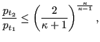
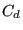

Next: Bleed Tapping Up: Fluid Section Types: Gases Previous: Fluid Section Types: Gases Contents
Properties: adiabatic, not isentropic, symmetric only if physically symmetric (i.e. same corner radius, corner angle etc.), else directional.
The geometry of the orifice fluid section is shown in Figure
85. The axis of the orifice goes through the center of gravity of
the cross section  and is parallel to the side walls. The orifice is
allowed to rotate about an axis parallel to the orifice axis and can be
preceded by a swirl generating device such as another orifice, a bleed tapping
or a preswirl nozzle.
and is parallel to the side walls. The orifice is
allowed to rotate about an axis parallel to the orifice axis and can be
preceded by a swirl generating device such as another orifice, a bleed tapping
or a preswirl nozzle.
The orifice element is characterized by an end node well upstream of the smallest
section  (let's call this position 1) and an end node 2 well downstream of
the smallest section (position 2). The smallest section of the gas stream is
called position m. This may be smaller than
(let's call this position 1) and an end node 2 well downstream of
the smallest section (position 2). The smallest section of the gas stream is
called position m. This may be smaller than  due to a contraction of the
gas and will be written as
due to a contraction of the
gas and will be written as
 .
.
In between position 1 and m the flow is assumed to be isentropic, consequently
In between position m and 2 the flow is assumed to be adiabatic, however, all kinetic energy from position m is assumed to be lost due to turbulence. Hence:
Combining this leads to the following equation:
Let us assume that
 is being slowly decreased starting from
1. Then the above equation will result in a steadily increasing mass flow rate
up to a maximum at (Figure 86)
is being slowly decreased starting from
1. Then the above equation will result in a steadily increasing mass flow rate
up to a maximum at (Figure 86)
 |
(54) |
after which the mass flow rate starts to decrease again [62]. In
reality, the decrease does not happen and the mass flow rate remains
constant. Indeed, at maximum corrected flow sonic conditions are reached
(so-called critical conditions). For
lower values of
 the flow is supersonic, which means
that waves cannot travel upstream. Therefore, the information that the
pressure ratio has decreased below the critical ratio cannot travel opstream
and the critical corrected flow persists throughout. Consequently, for
the flow is supersonic, which means
that waves cannot travel upstream. Therefore, the information that the
pressure ratio has decreased below the critical ratio cannot travel opstream
and the critical corrected flow persists throughout. Consequently, for
|  | (55) |
Equation (53) is replaced by
 |
(56) |
The orifice element is characterized by the following constants (to be specified in that order on the line beneath the *FLUID SECTION card):
Depending on the orifice geometry, an inlet corner radius or an inlet corner angle (chamfered inlet) should be selected. They are mutually exclusive. The corrections for a chamfered inlet are taken from [30].
The last constant, i.e. the number of a reference network element, is necessary in case a rotating structure is preceded by a network element which diverts the upstream air velocity from the axial (i.e. in the direction of the axis of the orifice) direction (such as a preswirl nozzle). In that case, the rotational velocity of the orifice has to be corrected by the circumferential component of the velocity at the exit of the preceding element.
Notice that the only effect of all constants following the cross section is to change the discharge coefficient . Its calculation can be performed according to different formulas. This is selected by the TYPE parameter:
Example files: linearnet, vortex1.